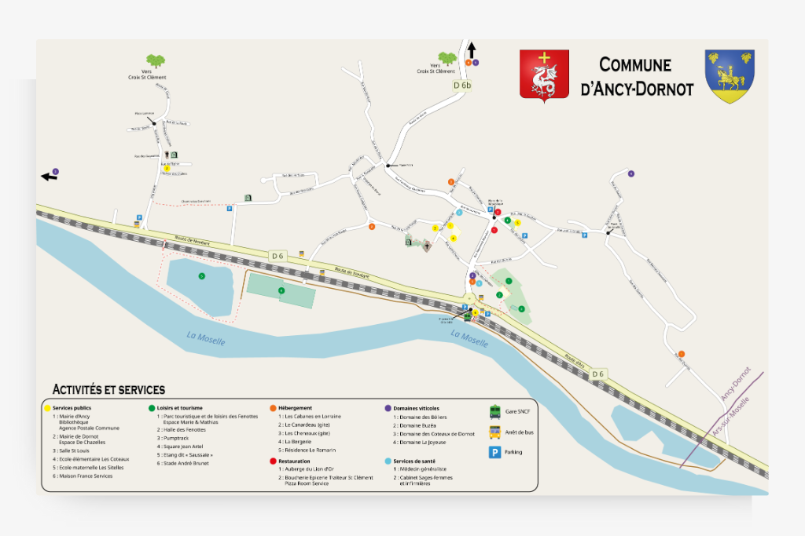
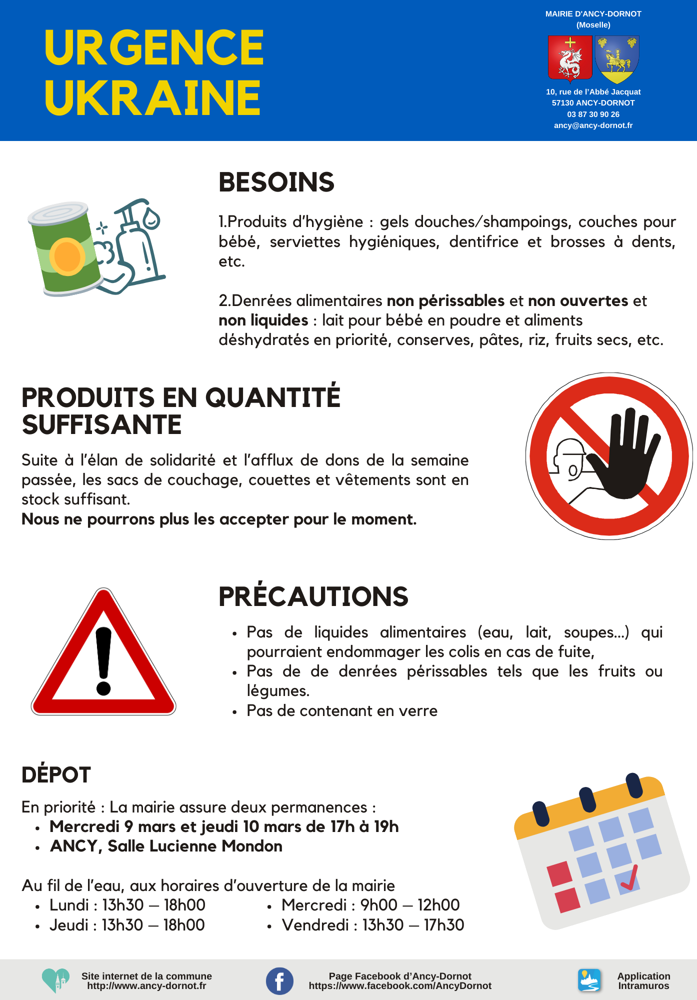
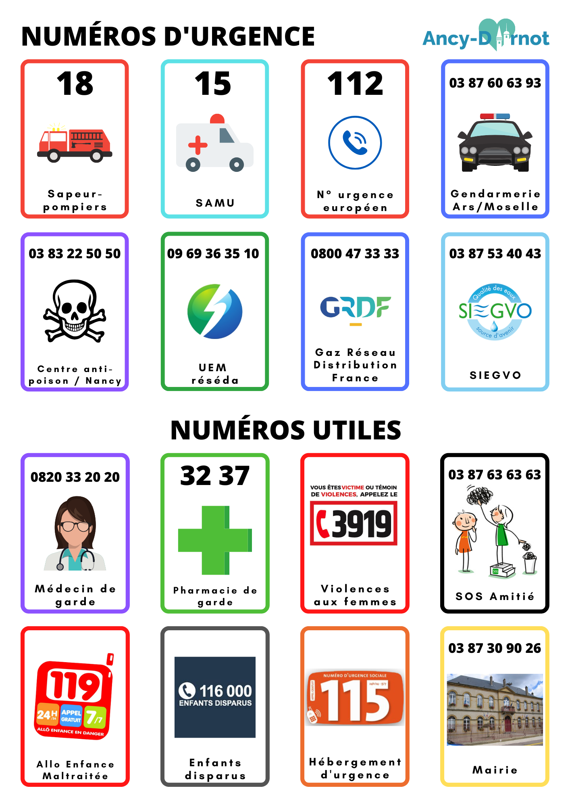

Supports d'information citoyenne



{kind=link}

{kind=link}


{kind=link}
En détail...
- CategorieInfographie & Multimédias
- Contexte Création d'une série de supports d'information et de sensibilisation pour faciliter l'accès aux services publics locaux et améliorer la relation citoyenne dans le cadre de la modernisation de la communication municipale
- Technologie Canva, Adobe Illustrator
- Mon rôle Conception graphique adaptée aux enjeux d'information publique Rédaction et adaptation pédagogique des contenus techniques Simplification et vulgarisation des procédures administratives Optimisation de la lisibilité et de l'accessibilité de l'information Hiérarchisation des contenus selon leur importance pratique Coordination avec les services pour validation des contenus techniques
- Défis relevés Traduction des informations techniques en langage accessible Respect strict de l'exactitude réglementaire des informations Création de supports attractifs pour des contenus potentiellement austères Adaptation des messages selon les publics (nouveaux arrivants, seniors, familles) Gestion des mises à jour fréquentes des procédures administratives Conformité aux obligations légales d'information publique
- Impact territorial Amélioration significative de l'autonomie des citoyens dans leurs démarches Réduction des appels téléphoniques et déplacements inutiles en mairie Renforcement de l'égalité d'accès à l'information publique Modernisation de l'image de la collectivité auprès des administrés Facilitation de l'intégration des nouveaux habitants
- Collaboration Travail étroit avec les services municipaux pour la validation technique Coordination avec les agents d'accueil pour identifier les besoins récurrents Interface avec les partenaires institutionnels (Maison France Services) Collaboration avec les associations locales pour diffusion ciblée
- Résultats Supports d'information claire et accessible Réduction mesurable des demandes d'information répétitives aux services Amélioration de la satisfaction citoyenne dans l'accès aux services Optimisation des ressources humaines par l'autonomisation des usagers Renforcement de la transparence administrative et de la proximité citoyenne